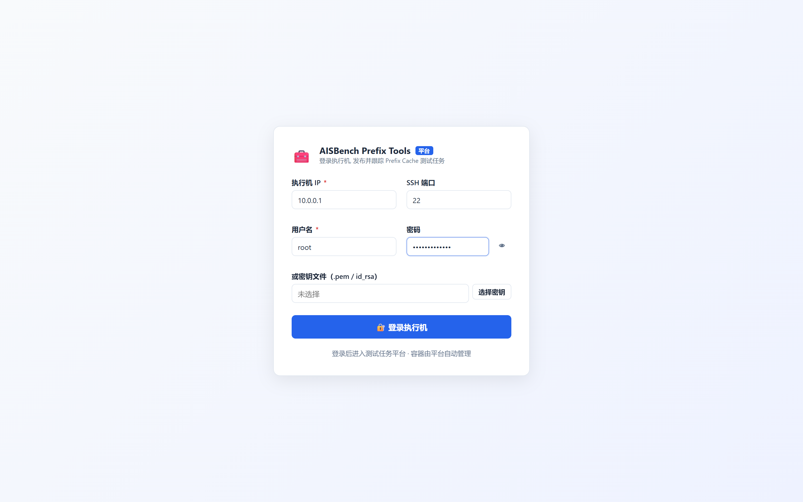
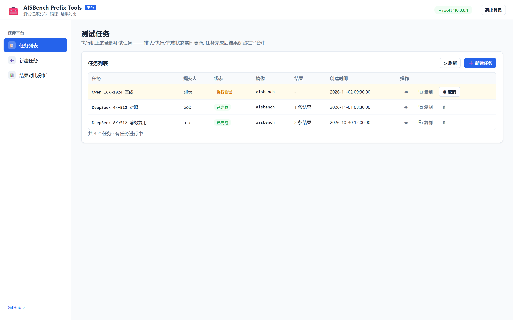
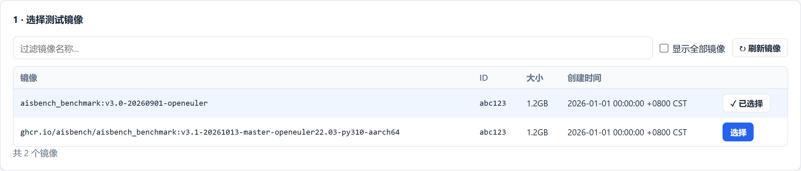
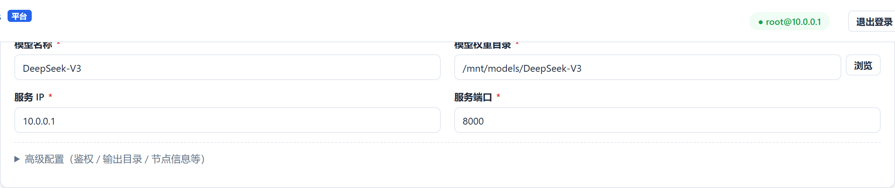
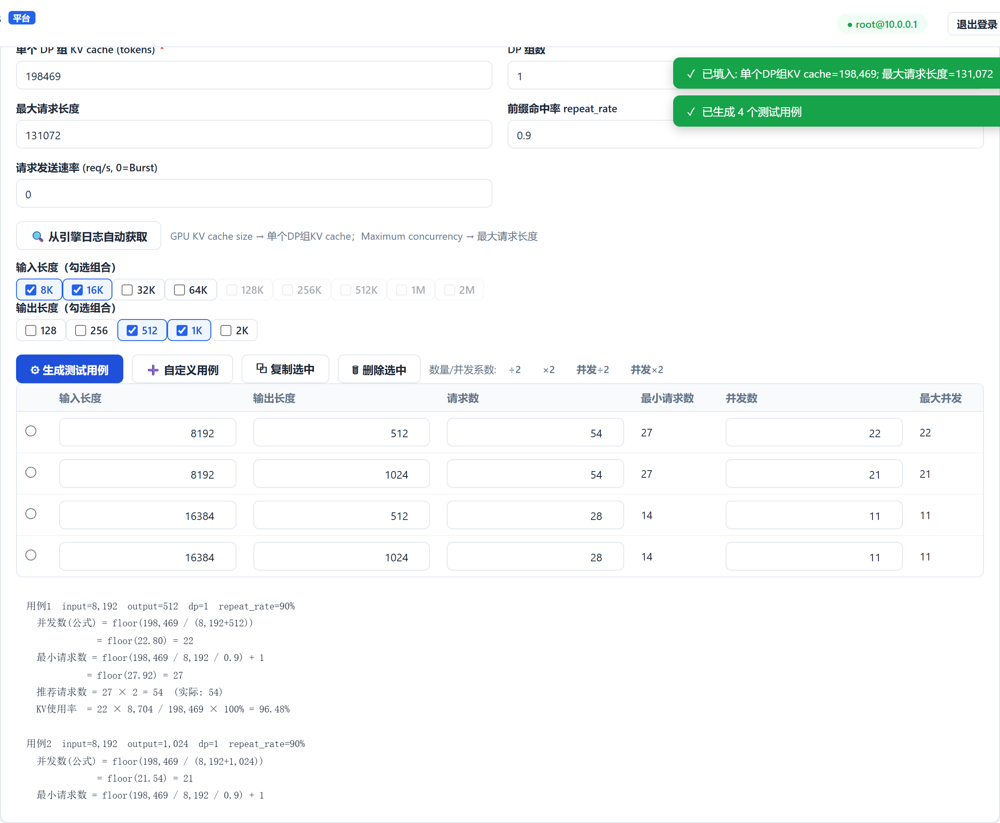
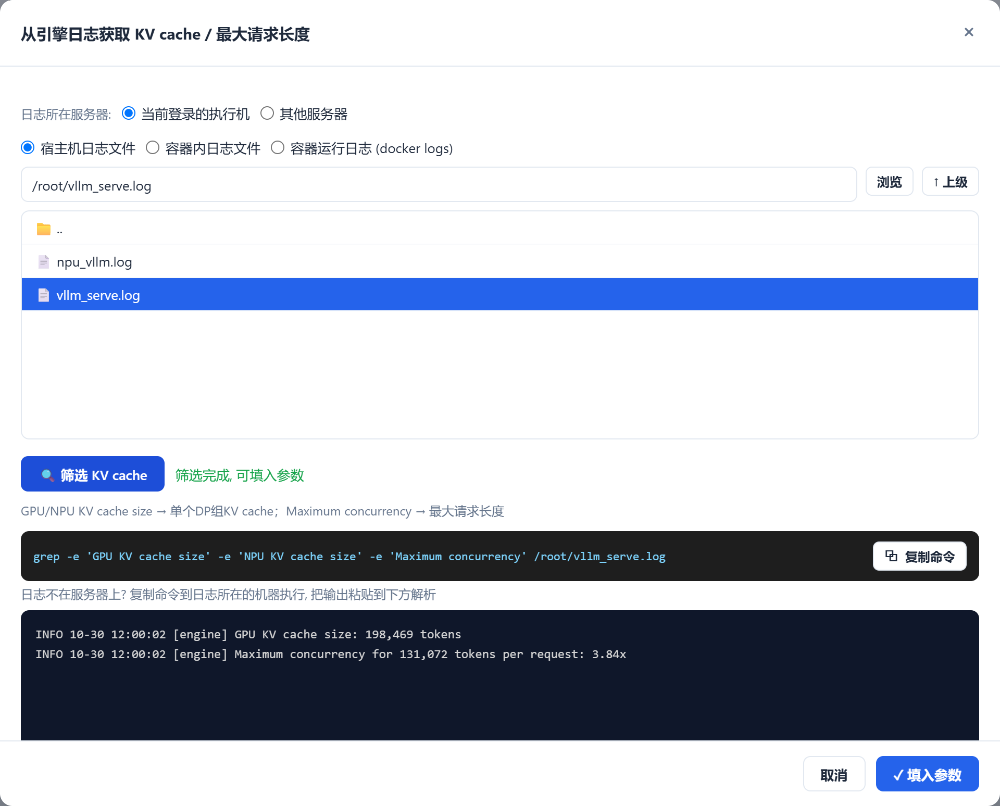
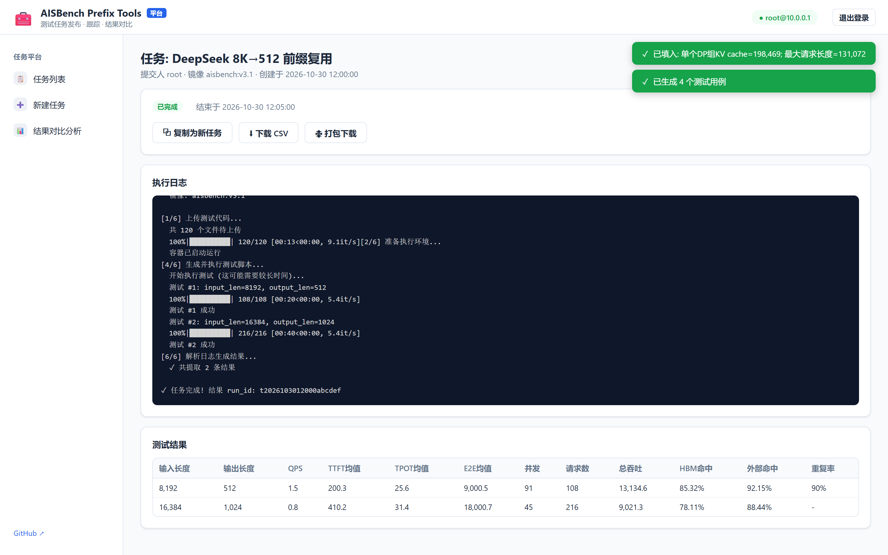

部署服务 · 访问网页 · 图文操作指南
| 角色 | 要求 |
|---|---|
| 执行机（跑测试的机器） | Linux + Docker 引擎；已有 aisbench 测试镜像与模型权重；推理服务已启动 |
| 服务机（跑本平台） | 能 SSH 登录执行机；与执行机是同一台时部署最简单 |
| 浏览器 | Chrome / Edge 等现代浏览器，无需安装任何插件 |
在有外网的电脑上打开 Releases 页，按执行机架构下载离线包，传到执行机后执行：
# 架构判断: 执行机上执行 uname -m, x86_64 选 amd64, aarch64 选 arm64
unzip aisbench-web-offline_1.0.1_linux_amd64.zip
cd aisbench-web-offline_1.0.1_linux_amd64
bash deploy.sh脚本自动 docker load 镜像并启动服务，默认监听 8320 端口。数据保存在解压目录的 data/ 下。
适合把平台部署在办公电脑 / 跳板机、通过 SSH 控制执行机的场景（执行机本身仍需 Docker）：
tar xzf aisbench-web_1.0.1_linux_amd64.tar.gz
chmod +x aisbench-web
./aisbench-web # 默认 8320 端口, AISBENCH_PORT 可修改git clone https://github.com/student-jhz/AISBench-Prefix-Tools-Web.git
cd AISBench-Prefix-Tools-Web
docker compose up -d --buildbash deploy.sh」即可，同名容器会自动重建，历史任务与结果数据不丢。部署完成后，在任意一台电脑的浏览器中打开：
http://<执行机IP>:8320firewall-cmd --add-port=8320/tcp --permanent && firewall-cmd --reload），再确认容器在运行（docker ps | grep aisbench）。

点击左侧「新建任务」，按下面三步填写；提交后平台自动准备容器、执行测试、解析结果，全程无需接触 Docker。



测试用例设计里的 KV cache 与最大请求长度不必手抄日志——点「从引擎日志自动获取」：

GPU KV cache size / NPU KV cache size 与 Maximum concurrency，点「填入参数」即回填表单（GPU 与 NPU 生态都支持）
任务列表或详情页点「复制」，自动回填该任务的镜像、配置与用例设计，调整后即可提交新任务——做参数对比实验时无需重填表单。
左侧「结果对比」中选两个结果 run（或上传 CSV），平台按输入 / 输出长度自动匹配用例，给出 21 项指标的差异表（A/B/Δ/Δ%）与同图柱状图，可导出对比 CSV。
| 问题 | 处理 |
|---|---|
| 想换服务端口 | 离线包改 deploy.sh / docker run 的 -p 参数；单文件模式设环境变量 AISBENCH_PORT |
| 任务卡在「执行中」 | 服务重启会自动把残留任务标记为「已中断」，重新提交即可 |
| 数据存在哪 | 解压目录 data/：任务状态、执行日志与结果 CSV 都在里面，升级不丢失 |
| 镜像 / 权重没准备好 | 先在执行机上 docker load 镜像、放好权重并启动推理服务，再回来建任务 |